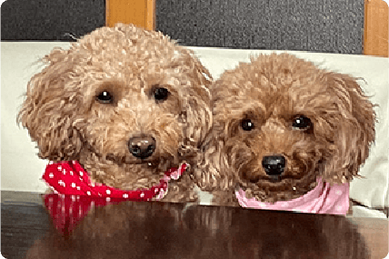
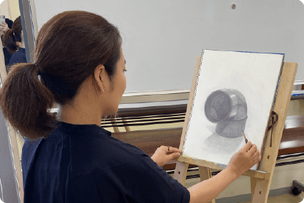

Web Desiner
元々ものづくりが好きで特に絵を描く事が好きでしたが、好きを仕事にすることの難 しさを知り、断念し、様々な業界で事務職を勤めていました。しかし将来について迷 いがあった中、職業訓練校をきっかけにデザインの世界を知りました。自分を変えた い気持ちで入り、習得し、よりWEBデザインに興味を抱くようになりました。現在も 仕事やデザスタなどで今後もデザインの幅をより広げて行けるよう精進しております。

現職の自社ECサイトのバナーやサイトのデザイン制作で培ってきた経験によって自由な発想力や多角的な視点を重視しております。
もともと相手の感情に敏感なため、相手の気持ちに合わせた話し方や親しみやすさを与えたコミュニケーションを意識してきました。
一度挫折を経験しても諦めることなく、決めた目標を最後まで追い続ける粘り強い一面もあると自負しています。
特に知的好奇心が強く、気になった事は納得のいくまで調べます。制作の時も商品やサービスの魅力なども探求しております。
物事に対して責任を持ってやり遂げる事ができます。制作の時も常に納期を大切にしながら取り組んできました。
困っている人を放っておけず、親身に相談に乗ることがあります。誰かの役に立てる事が自分も喜びに感じます。


トイプードル２匹を実家に飼っており、一緒に過ごすことで日々の癒しとなっております。犬のみならず他の動物も大好きです。

最近はデッサンや日本画の教室に通ったりもしています。ポートフォリオにあるイラストも私が挑戦して描いてみました。